Gallery
A bird from Valencia.
An oxygen generator using algae in tubes to generate it.
The neighbours' cat, Beri, who likes to visit our apartment.
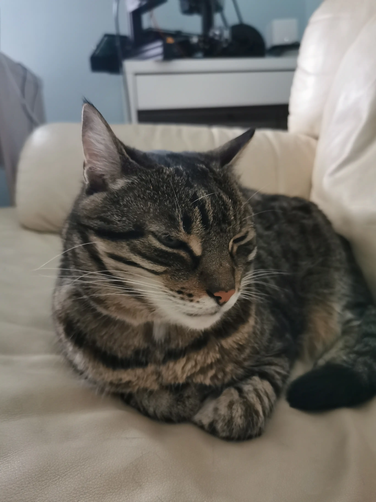
Beri again.
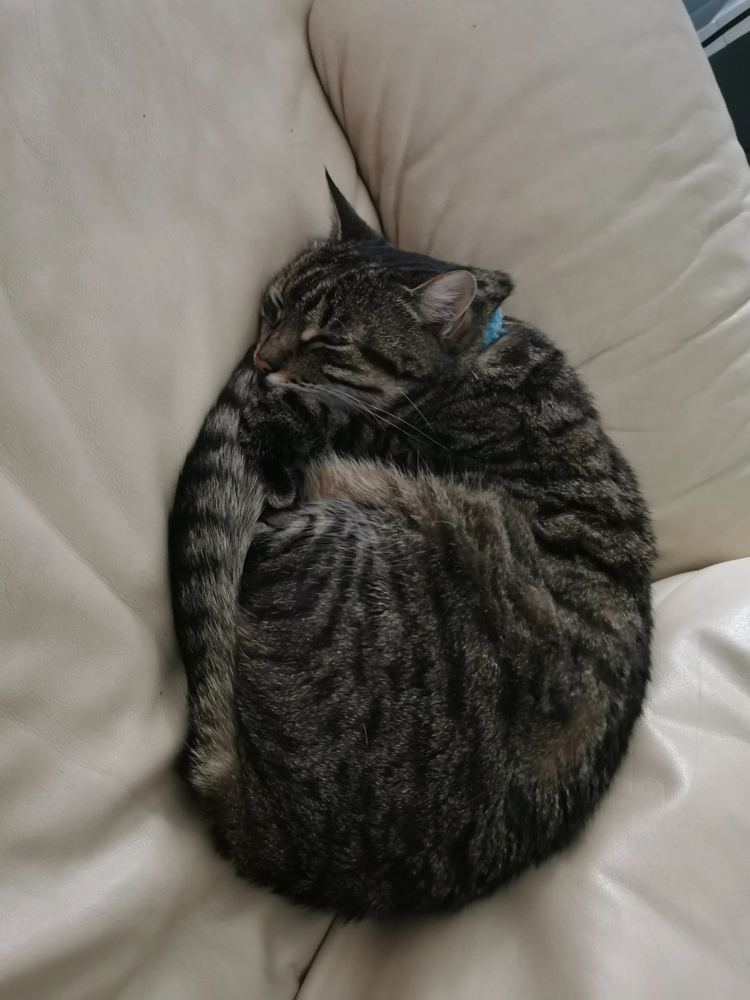
Beri sleeping.
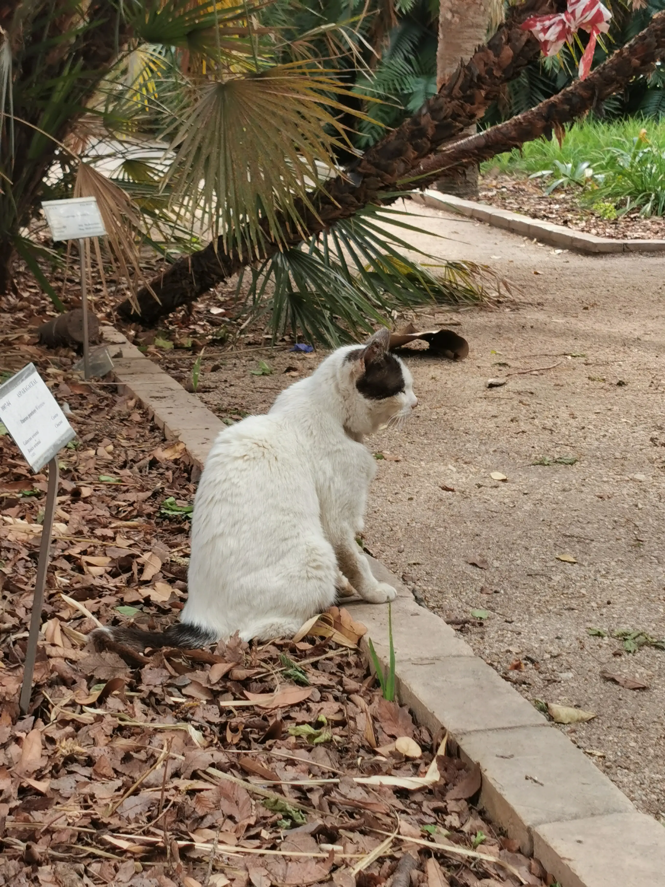
A cat from a botanic garden in Spain.
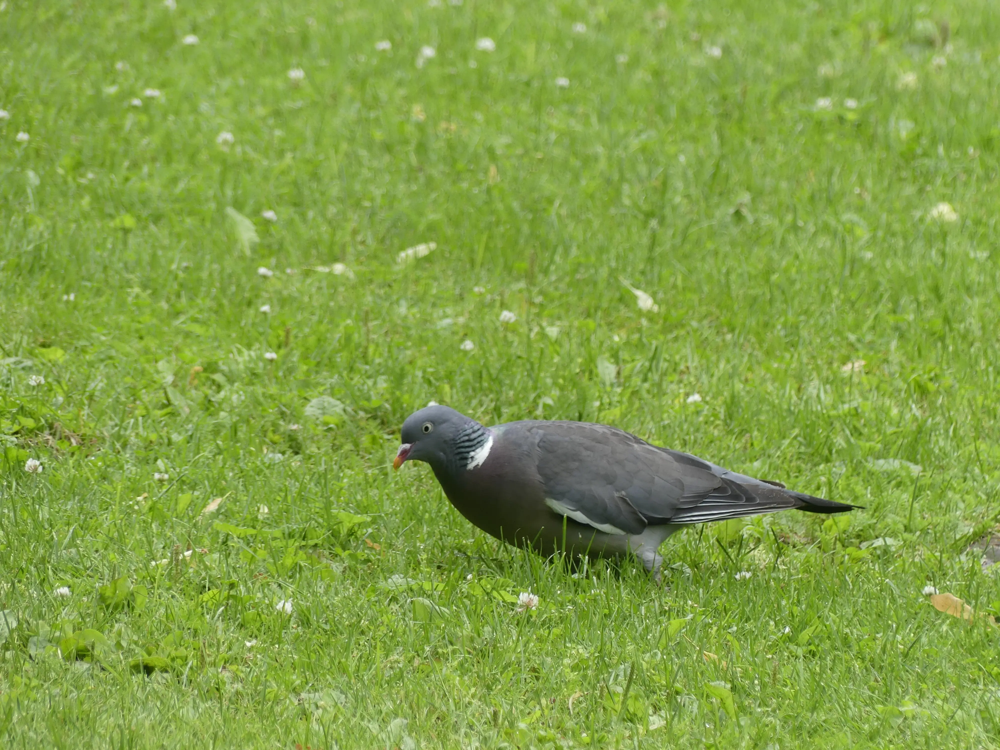
A pigeon from Oslo.
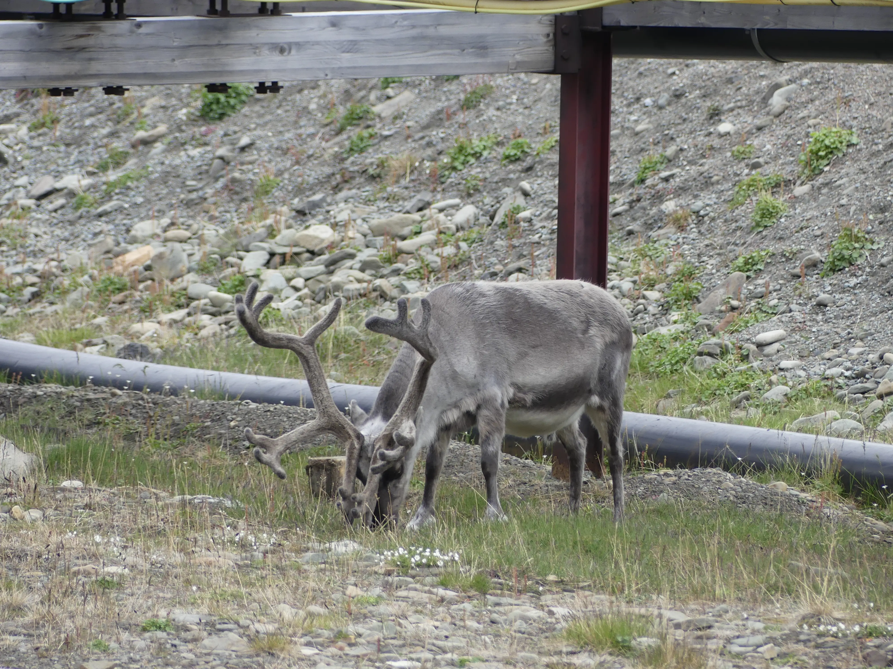
A deer from Svalbard, which I found after I was supposed to take out the trash, but didn't find the trash can outside. Later I found it, threw away the trash, went to take my camera and took this picture.
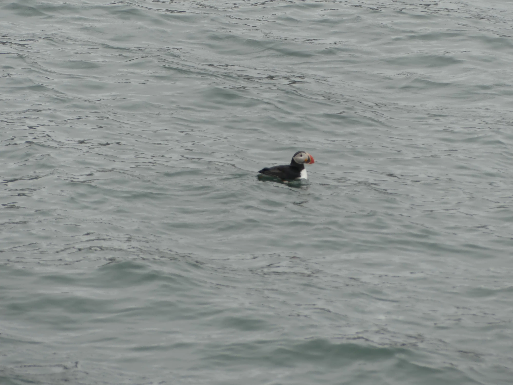
A puffin, of which I took a picture while we were on a 5-hour journey by ship to Pyramiden, an abandoned Russian industrial town on Svalbard.
Some ropes on the before-mentioned ship, I think they look pretty nice.
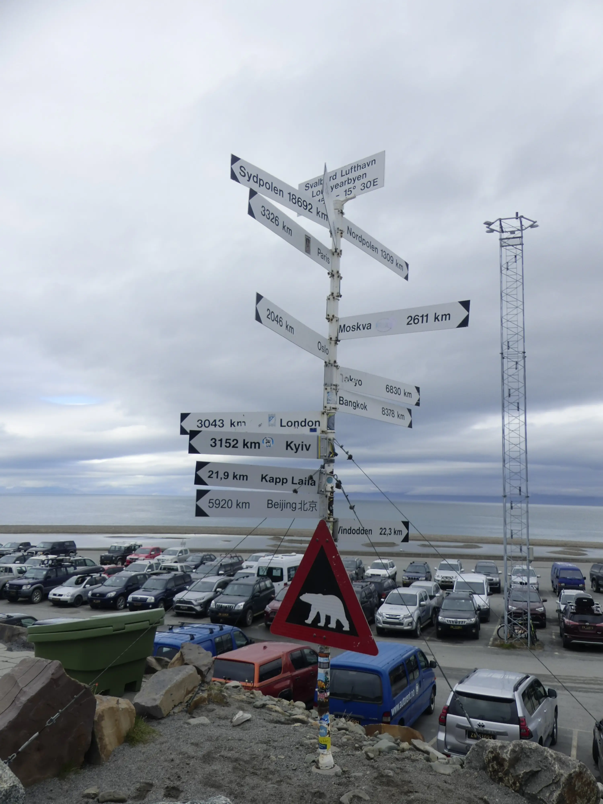
A bunch of signs showing the distances to cities from the Svalbard airport. You can see how far away Svalbard is. It shows how large the earth really is.
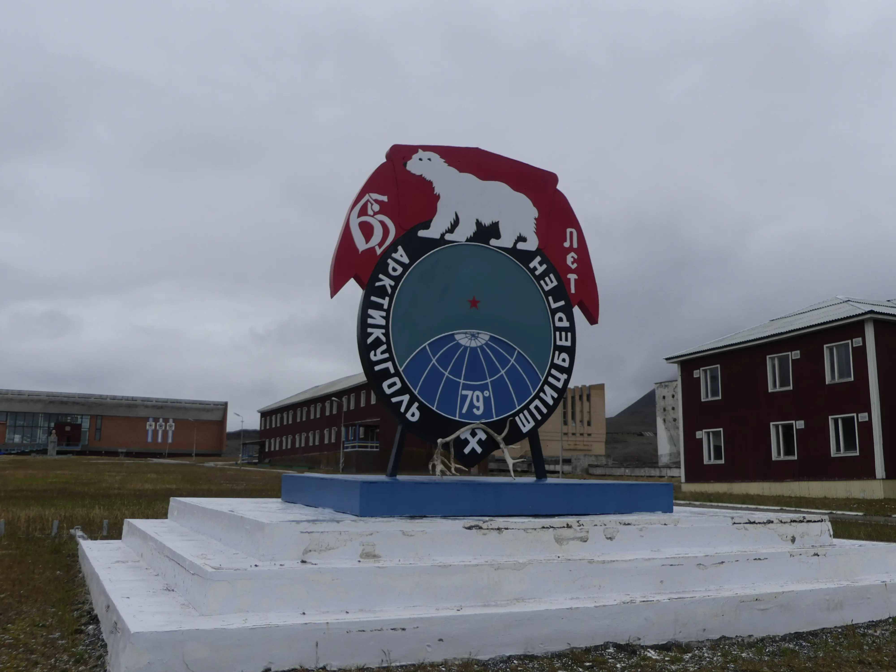
A sign from Pyramiden. Interestingly, the 79˚ sign is not accurate, beacause Pyramiden is at 78.6561° N, not 79°.
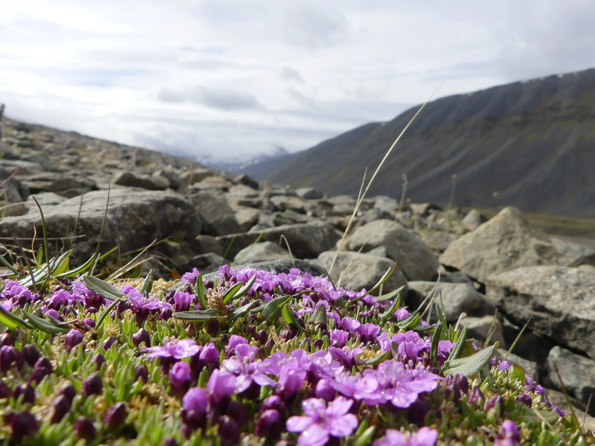
Flowers on Svalbard.
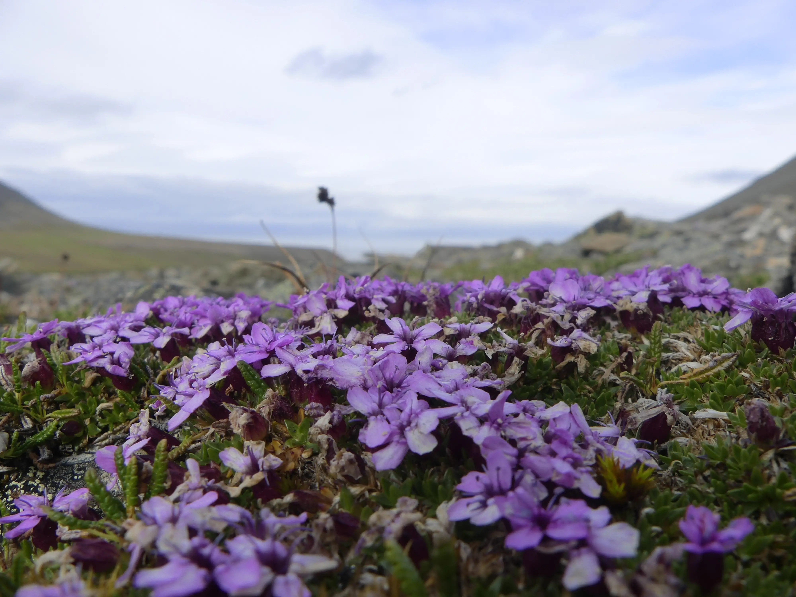
More flowers from Svalbard.
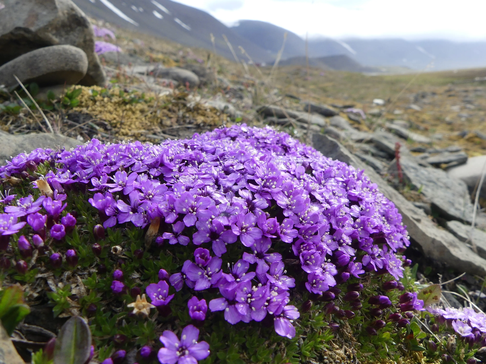
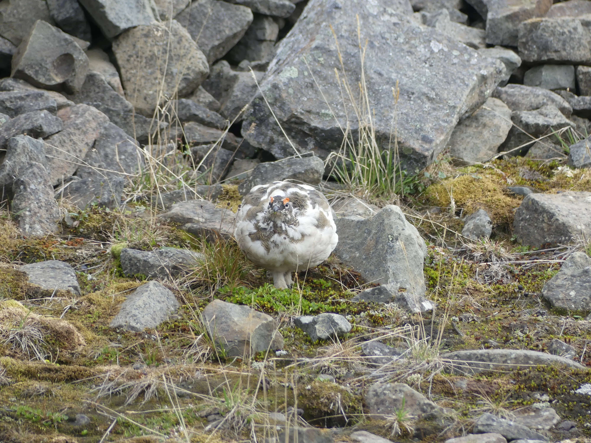
The svalbard chicken. They are not the best at flying.
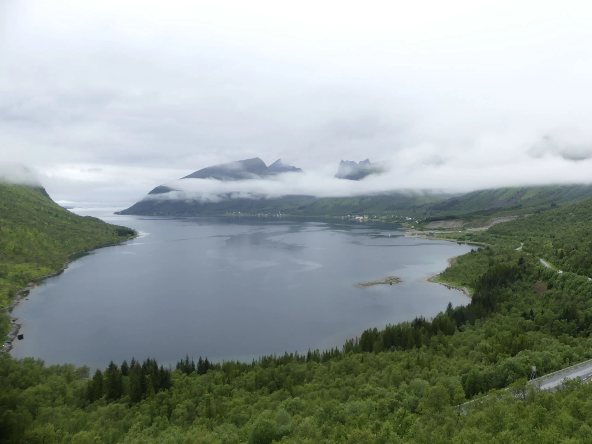
A lake from the Lofoten islands, Norway.